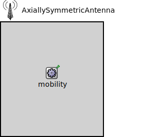

Package: inet.physicallayer.wireless.common.antenna
AxiallySymmetricAntenna
compound moduleThis antenna model computes the antenna gain from the direction using linear interpolation. The gain parameter contains a sequence of angle [degree] and gain [dB] pairs. The first pair must be at 0 [degree].
Inheritance diagram
The following diagram shows inheritance relationships for this type. Unresolved types are missing from the diagram.
Extends
| Name | Type | Description |
|---|---|---|
| AntennaBase | compound module |
This module servces as the base module for antenna models. |
Parameters
| Name | Type | Default value | Description |
|---|---|---|---|
| mobilityModule | string |
the path to the mobility module relative to this module, only used if no mobility submodule is present |
|
| numAntennas | int | 1 |
the number of antennas in the antenna array |
| baseGain | double | 0dB | |
| gains | string | "0 0" |
sequence of angle [degree] in the range (0, 180) and gain [dB] pairs |
| axisOfSymmetry | string | "x" |
allows matching the antenna radiation pattern (IAntennaGain) to the visual representation, antenna orientation is determined by the antenna's mobility model |
Properties
| Name | Value | Description |
|---|---|---|
| display | i=device/antennatower | |
| class | AxiallySymmetricAntenna |
Source code
// This antenna model computes the antenna gain from the direction using linear // interpolation. The gain parameter contains a sequence of angle [degree] and // gain [dB] pairs. The first pair must be at 0 [degree]. // module AxiallySymmetricAntenna extends AntennaBase { parameters: double baseGain @unit(dB) = default(0dB); string gains = default("0 0"); // sequence of angle [degree] in the range (0, 180) and gain [dB] pairs string axisOfSymmetry = default("x"); // allows matching the antenna radiation pattern (IAntennaGain) to the visual representation, antenna orientation is determined by the antenna's mobility model @class(AxiallySymmetricAntenna); }File: src/inet/physicallayer/wireless/common/antenna/AxiallySymmetricAntenna.ned
 This documentation is released under the Creative Commons license
This documentation is released under the Creative Commons license